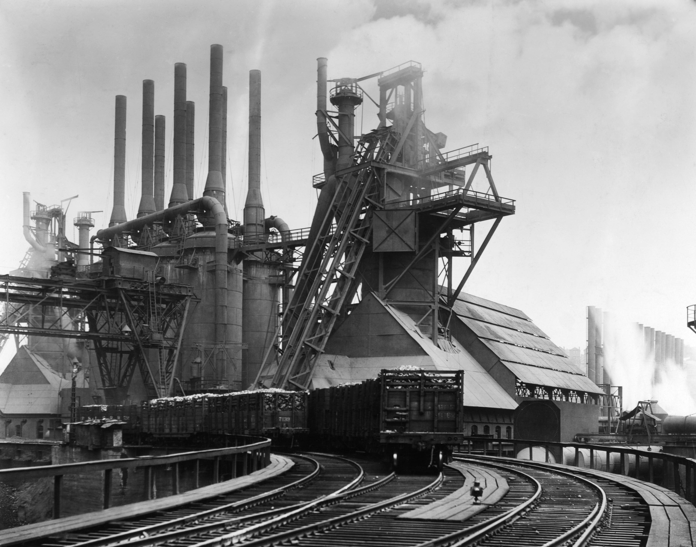

Empresas
Carnegie Steel Company

Carnegie fusionó sus participaciones y las de sus asociados en 1892 al crear la empresa Carnegie Steel Company. Hacia 1889, el excedente de acero de Estados Unidos superaba al de Inglaterra y Carnegie poseía la mayor parte.